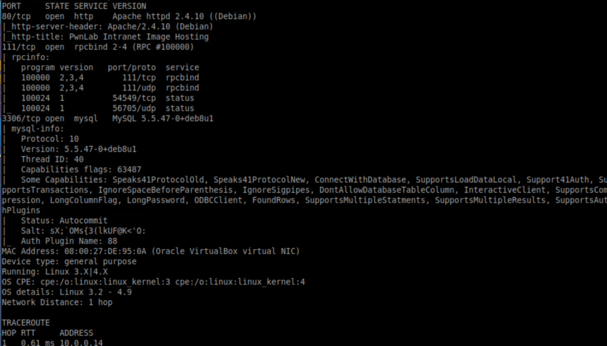

Attacker IP: 10.0.0.6
Target IP: 10.0.0.14


Nikto results:

After some googling and some help from walkthrough, this was discovered:
https://highon.coffee/blog/lfi-cheat-sheet/#php-wrapper-phpfilter
https://www.idontplaydarts.com/2011/02/using-php-filter-for-local-file-inclusion/


File upload:

Uploading simple-backdoor.php is not allowed. Changing the extension to .php.jpg or .php.png. Got error 002.
I used LFI again to access upload.php file.

OWASP has info on file uploads:https://www.owasp.org/index.php/Unrestricted_File_Upload
notice getimagesize()
This was used to make a gif

Of course the file has to be executed as php in order to be able to do anything. This is where I had to use some help by looking at a walkthrough. I forgot to download index file...
index file has an unimplimented feature which looks at the cookie value lang and includes a file.

For some reason, sending GET request with lang parameter correctly, it still didn't work. I kept getting 500 response. After some googling, i figured out that I can use GIF89; then php code on the next line so I modified simple-backdoor.php file and uploaded that.

No errors this time:

Running as www-data as expected:

Netcat exists on the system

I got netcat listening

I got pty shell using python, as you can see there are four users.

We have passwords for some of the users from the sql database.
I was able to log into kent and kane account. Kent had an empty folder. Kane has a setuid executable file.

Running strings on the file shows this:

You can modify PATH and get the application to execute your "cat" file/script.

Mike has another file:

running strings on it shows this:

Knowing that our input goes to %s, we can inject command and execute a shell

^ that didn't help. I was still not root.
This has more info on privesc https://pentestlab.blog/category/privilege-escalation/
I needed -p after bash...


That was more difficult than it should've been. Mostly because the amount of small mistakes I've made and the times I didn't pay enough attention.